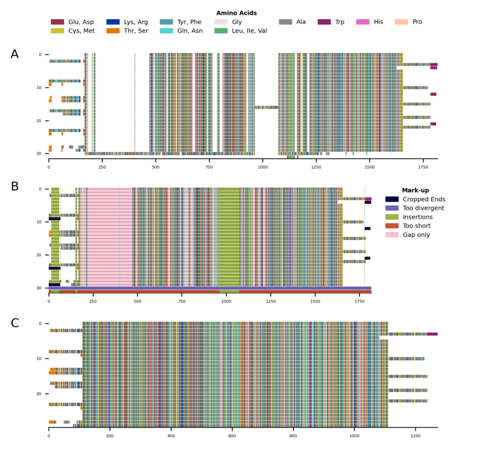

CIAlign¶
CIAlign is a command line tool which performs various functions to clean, visualise and analyse a multiple sequence alignment (MSA).

Summary¶
CIAlign allows the user to:
Clean
Remove sources of noise from an MSA
Remove sequences above a threshold level percentage of divergence from the majority.
Remove insertions which are not present in the majority of sequences.
Crop poorly aligned sequence ends.
Remove short sequences below a threshold number of bases or amino acids.
Remove columns containing only gaps.
Remove either end of an alignment where columns don’t meet a minimum identity threshold and coverage level.
Visualise
-
Generate image files summarising the alignment.
Label these images to show how CIAlign has affected the alignment.
Draw sequence logos
Plot alignment statistics - visualise coverage and conservation at each position in the alignment.
Interpret
Generate consensus sequences.
Generate position frequency, position probability and position weight matrices
Format these matrices to be used as input for the BLAMM and MEME motif analysis tools.
Generate a similarity matrix showing the percentage identity between each sequence pair.
Edit
Extract a section of the alignment.
Unalign the alignment.
Replace U with T, or T with U in a nucleotide alignment.
CIAlign is designed to be highly customisable, allowing users to specify exactly which functions to run and which settings to use.
It is also transparent, generating a clear log file and alignment markup showing exactly how the alignment has changed and what has been removed by which function.
Citation¶
If you found CIAlign useful, please cite:
Mailing List¶
Sign up here for updates when a new feature is added to CIAlign